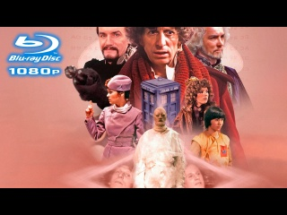
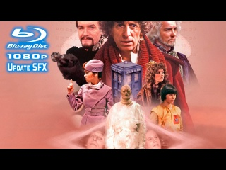
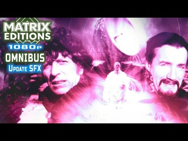
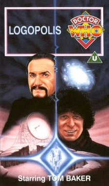
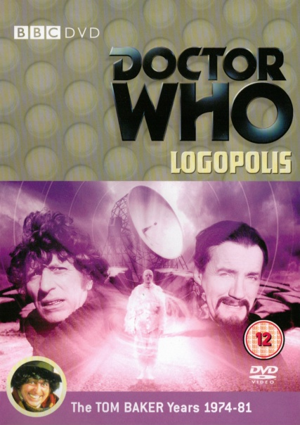
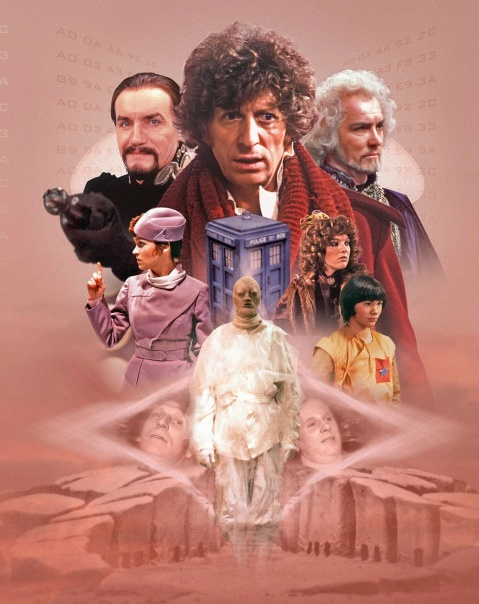

Субтитры: Русские и Английские |  |
|---|---|
с обновленными спецэффектами Субтитры: Русские и Английские |  |
с обновлением визуальных эффектов (cunningmunki) Субтитры: отсутствуют |  |
Logopolis
Дата выхода: 28 февраля - 21 марта 1981
Формат: 4 эпизода по 25 мин.
| | |
Последняя серия Тома Бейкера в роли Доктора. ТАРДИС прибывает на Землю — Доктор хочет починить систему маскировки и для этого измеряет настоящую полицейскую будку. В это время австралийская стюардесса Тиган случайно заходит в ТАРДИС и оказывается заперта внутри. Мастер, завладевший телом Тремаса в предыдущей серии, вмешивается в работу Логополиса — планеты математиков, которые вычисляют саму ткань реальности. Энтропия Вселенной начинает стремительно расти, грозя всё уничтожить. В финале на радиотелескопе Фарос Доктор падает с вышки — и регенерирует. Загадочный Наблюдатель, сопровождавший всю серию, оказывается проекцией будущего Доктора: он сливается с регенерирующим телом, и на свет появляется Пятый Доктор. Последние слова Четвёртого: «Это конец... но момент был подготовлен». Том Бейкер пробыл Доктором семь сезонов и сто семьдесят два эпизода — дольше, чем кто-либо другой, и остаётся самым узнаваемым Доктором классического сериала.
 VHS - март 1992 |   DVD+Boxset - 29 января 2007 |  Blu-ray - 18 марта 2019 * Версия в нашей группе |
|---|
